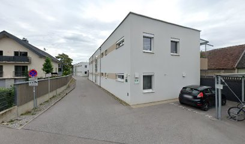

Büro und Ausstattung
Ein Arbeitsplatz in Graz für vertrauliche Dokumente und persönliche Termine.

Vertraulichkeit
Dokumente werden vertraulich behandelt und nur für den jeweiligen Auftrag verwendet.
Abwicklung per E-Mail oder Post
Aufträge lassen sich per E-Mail abwickeln. Die beglaubigte Übersetzung kommt per Post oder wird im Büro abgeholt.
Termine im Büro
Persönliche Termine in der Casalgasse finden nach Vereinbarung statt.